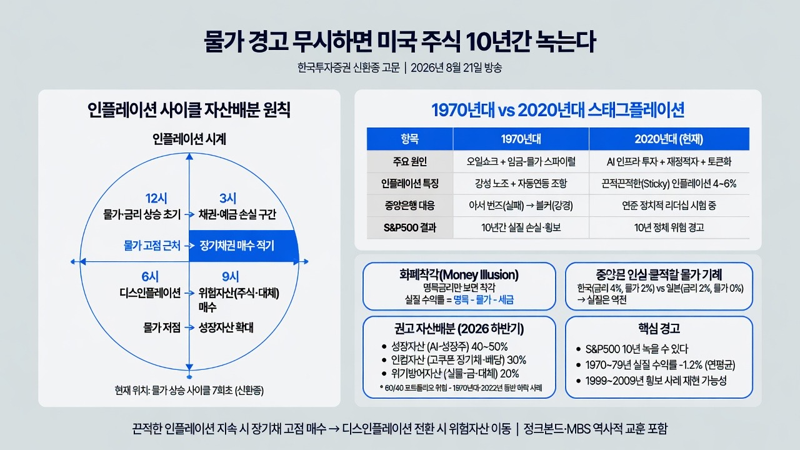

https://www.youtube.com/channel/UCIUni4ScRp4mqPXsxy62L5wMORNING DIGEST · 2026-08-25 · https://www.youtube.com/channel/UCIUni4ScRp4mqPXsxy62L5w🎬 영상
물가 경고 무시하면 미국 주식 10년간 녹는다 (한국투자증권 신환종 고문) ｜2026년 8월 21일 방송

01핵심 개요
항목
내용
채널/화자
언더스탠딩 × 신환종 (한국투자증권 신환종 고문, 채권·자산배분 전문가)
주제
인플레이션·금리 사이클에 따른 자산배분 원칙, 1970년대 스태그플레이션과 2020년대 비교
핵심 결론
인플레이션 사이클은 "고점 근처에서 장기채권 매수, 저점 근처에서 위험자산 매수"가 기본이며, 지금은 끈적끈적한(스티키) 인플레이션이 향후 몇 년간 이어질 가능성이 높아 S&P500 등 주식이 70년대처럼 10년간 정체·손실을 볼 수 있다
시대적 배경
2026년 하반기, 미국 CPI 재상승 우려·연준 정책 불확실성·AI 인프라 투자 붐이 겹치는 국면
러닝타임
약 98분
02핵심 기능/내용 구조
이 영상은 크게 세 갈래로 구성된다.
자산배분의 기본 원리: 인플레이션·금리 사이클의 어느 지점에 있느냐에 따라 채권/주식/실물자산 비중을 바꿔야 한다는 원칙 설명 (0:00)
1970년대 미국 스태그플레이션 역사 분석: 어빙 피셔의 화폐착각 개념, 아서 번즈와 폴 볼커의 대응 비교, 임금-물가 스파이럴, 독일·일본·중남미의 대응 사례 비교 (21:32)
2020년대 현재와 향후 전망: AI 인프라 투자, 디지털자산·토큰화, 재정적자가 만드는 "끈적한 인플레이션" 구조와 이에 맞는 자산배분 제안 (76:32)
03기술적 맥락 (핵심 개념 풀이)
자산배분 사이클(인플레이션 시계): 물가·금리가 오르는 초기엔 채권·예금이 손해(계속 금리가 더 오르므로), 물가·금리가 고점에 가까워지면 그때가 장기채권 매수 적기(확정 고금리를 오래 확보). 이후 디스인플레이션(물가 상승률 둔화) 국면에서는 위험자산(주식·대체투자)으로 이동하는 것이 기관투자자(연기금·보험사)의 기본 전략이다.
화폐착각(Money Illusion, 어빙 피셔): 명목금리만 보고 투자를 결정하면 실질(물가상승률·세금 차감 후) 수익률에서 손해를 본다는 개념. 예시: 일본(물가상승률 0%, 금리 2%)과 한국(물가상승률 2%, 금리 4%) 중 명목금리가 높은 한국을 선택하기 쉽지만, 세금은 명목금리에만 부과되므로 실제로는 일본 쪽 실질수익률이 더 높을 수 있다.
임금-물가 스파이럴: 물가가 오르니 임금을 올려주고, 오른 임금 때문에 기업이 다시 가격을 올리는 악순환. 1970년대 미국은 강성 노조가 임금 인상을 물가에 자동 연동시키는 조항을 넣어 이 악순환이 고착됐다.
끈적끈적한 인플레이션(Sticky Inflation): 물가가 목표치(2%) 근처까지 잘 안 내려가고 5% 안팎에서 버티다가 다시 튀어 오르는 패턴. 1970년대 두 차례의 오일쇼크처럼, 2020년대에도 여러 차례 재발할 수 있다는 것이 화자의 핵심 경고다.
정크본드(하이일드 채권): 신용등급 BB 이하 투기등급 채권. 1970년대 스태그플레이션으로 다수 기업이 투자등급에서 투기등급으로 강등("추락천사")되며 시장이 커졌고, 마이클 밀켄이 이를 대량으로 묶어(풀링) 분산 투자하는 기법으로 막대한 수익을 창출했다.
MBS/CMO(모기지유동화증권): 저축대부조합(SNL) 부실을 메우며 등장한 상품으로, 이후 레버리지가 누적되어 2008년 금융위기의 토대가 됐다고 설명한다.
04전략적 의미
"주식은 무조건 우상향" 신화에 대한 경고: S&P500도 1970년대(횡보·실질손실), 1999~2009년(닷컴버블 후 횡보) 등 10년 단위로 정체되거나 손실을 낸 구간이 있었다. 인플레이션이 통제되지 않으면 2020년대 후반에도 유사한 국면이 재현될 수 있다는 것이 영상 제목의 핵심 경고다.
전통적 60/40 포트폴리오(주식60·채권40)의 한계: 2022년, 1970년대처럼 주식과 채권이 동시에 하락하는 국면에서는 이 공식이 작동하지 않는다. 화자는 성장자산(40~50%)·인컴자산(채권 등 30%)·위기방어자산(20%)으로 분산할 것을 제안한다.
국가별 대응 역량이 인플레이션 극복의 핵심 변수: 볼커(미국), 분데스방크(독일)처럼 단기 고통(경기침체)을 감내하며 금리를 강하게 올린 국가는 인플레이션을 빠르게 진압했지만, 아서 번즈처럼 여론(뉴욕타임스 등 지식인 사회의 케인즈주의적 비판)에 밀려 조기에 금리를 내린 경우 인플레이션이 장기화됐다. 지금 연준과 미국 사회가 그 고통을 감내할 정치적 리더십과 여론의 공감대를 형성할 수 있는지가 관건이다.
05핵심 워크플로우·방법론 (투자 판단 절차)
현재 인플레이션 사이클 위치 파악: 채권 전문가·금리 애널리스트의 판단에 의존해 "지금이 고점권인지 저점권인지"를 가늠한다. 화자는 현재를 "물가 상승 사이클의 7회초 정도"로 비유하며, 아직 정점 전이라고 진단한다 (0:00).
역사적 유사 국면과 비교: 브리지워터 레이 달리오의 지적처럼 1970년대 1차·2차 오일쇼크 그래프와 2020년대 인플레이션 그래프를 겹쳐보고 패턴 유사성을 확인한다 (21:32).
정책 대응 역량 평가: 중앙은행이 경기침체를 감내하고서라도 금리를 유지할 정치적·사회적 여건이 있는지(볼커형 vs 번즈형) 판단한다 (26:28).
사이클 국면별 자산 배분 실행: 물가 고점권에서는 장기채(만기 30년 이상, 고쿠폰) 비중 확대, 디스인플레이션 전환 시 위험자산(주식·대체투자) 비중 확대. 현재는 성장자산(AI 관련 40~50%) + 인컴자산(고쿠폰 채권·배당 30%) + 위기방어자산(20%)의 분산 배분을 제안한다 (92:13).
06활용 시나리오
개인 투자자의 은퇴자산 배분 재점검: 예적금·단기 채권에 몰려 있다면, 현재 금리 수준(미국 10년물 4.7%대, 30년물 5.3%대)이 역사적으로 낮지 않은 구간이므로 장기채 편입을 검토하는 판단 근거로 활용.
기관투자자·연기금의 매크로 리서치 참고자료: 인플레이션·금리 사이클 프레임워크와 70년대 사례 비교를 통해 자산배분위원회 논의 자료로 활용 가능.
거시경제 교육 콘텐츠: 어빙 피셔의 화폐착각, 임금-물가 스파이럴, 정크본드의 탄생 배경 등은 경제사·금융 교육용 사례로 그대로 활용할 수 있다.
정책 분석가의 연준 대응 시나리오 점검: 아서 번즈와 볼커의 대응 차이를 통해 향후 연준이 정치적 압력 속에서 어떤 경로를 택할지 예측하는 참고 프레임으로 사용.
07현황 및 전망
화자의 결론: 2020년대 후반 인플레이션은 과거 저물가 시대(2010년대 물가 1%대)로 돌아가지 않고, 평균 2.5~3% 수준에서 등락하며 쉽게 잡히지 않는 "스티키" 국면이 지속될 가능성이 높다.
스티키 인플레이션의 3대 요인: ① AI 인프라 구축 과정에서의 대규모 자원·자본 투입(데이터센터 건설 등, 디플레는 먼 훗날의 이야기), ② 디지털자산·토큰화 활성화로 인한 화폐유통속도 증가, ③ 지정학적 리스크에 따른 공급망 재편(탈중국·안전지대 이전) 비용 상승 (76:32).
재정적자 구조: 코로나19 이후 좌우 정권을 막론하고 재정적자가 구조적으로 확대되어 있으며, 정부 입장에서는 부채의 실질가치를 낮추는 인플레이션 용인이 합리적 선택이 될 수 있다는 점도 스티키 인플레이션을 지지하는 배경으로 제시된다.
시점 전망: 화자는 2026년 하반기~2027년까지는 인플레이션 상승 국면이 이어지다가, 2027년 중반~후반경 변곡점이 올 가능성을 언급한다. 다만 과거처럼 급격한 붕괴(디플레이션 전환)가 아니라 완만하게 오르내리는 패턴을 예상한다.
자산별 전망: 부동산은 극단적 승자도 패자도 아니지만 스태그플레이션 국면에서도 건축비 상승으로 하방이 지지되어 꾸준한 중간 성과를 낸다고 평가. 금·원자재는 70년대 최고 승자였으나 80년대 급락한 이력이 있어 사이클 전환 시점 포착이 중요하다고 강조한다.